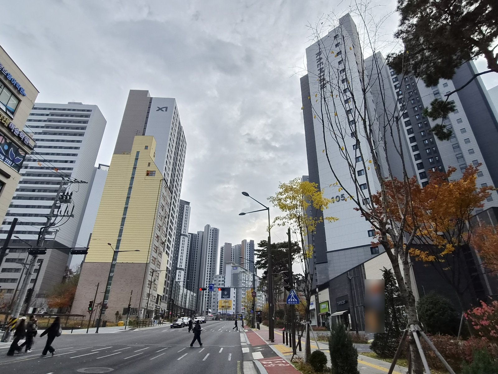

✍️ [직접 채우기: 도입 — 이문동에 사는 사람으로서 지난 2년 동네가 바뀐 장면 1~2문장 (사진과 함께)]
안녕하세요. 착한언니복덕방 신촌자이엘라&마포그랑자이 (착한언니) 부동산입니다.
2014년 겨울부터 신촌 한 자리, 12년째 마포·서대문만 보고 있어요.
저는 이문동 래미안라그란데에
살고 있어요.
그래서 이문휘경뉴타운은
중개사로서도,
주민으로서도 매일 보는 동네예요.
구역마다 단계가 달라서
헷갈리시는 분이 많아,
공식 자료로 한 번에
정리해 볼게요.

▲ 이문동 큰길 — 왼쪽 이문아이파크자이,
오른쪽 래미안라그란데
(2026.11 직접 촬영)
| 1. 구역별로 어디까지 왔나요? |
| 구역 | 단지명 | 정비몽땅 단계 | 메모 |
| 이문1 | 래미안라그란데 | 준공인가 | 2025년 1월 입주 시작 |
| 이문3 | 이문아이파크자이 | 부분준공인가 | 4,321가구 (보도) |
| 이문4 | (미정) | 관리처분인가 | 3,488가구 계획 · 이주 진행, 2027년 상반기 착공 예정 (보도) |
| 휘경3 | 휘경자이디센시아 | 준공인가 | |
| 휘경5 | - | 추진위원회승인 | 초기 단계 |
| 신이문역세권 | - | 조합설립인가 | 장기전세주택 도시정비형 |
| 신이문2 역세권 | - | 정비계획 수립 | 초기 단계 |
단계는 서울시 정비사업
정보몽땅(2026.11.16 수집)
가구 수·일정은 언론 보도 기준
휘경1·2구역은 사업을 마치고
조합이 해산된 구역이에요
| 2. 살면서 느끼는 변화 |
✍️ [직접 채우기: 변화 ① — 상권·편의시설 (사진)]
✍️ [직접 채우기: 변화 ② — 도로·통학·교통 (아쉬운 점도 솔직하게)]
언론에서도 “신축은 많이 들어섰는데
길은 그대로”라는 지적이 있었어요.
사는 사람 입장에서 맞는 부분과
아닌 부분을 적어 볼게요.
✍️ [직접 채우기: 도로·교통 지적에 대한 생활자 의견 (확인된 것만)]
| 3. 구역별로 볼 때 체크할 것 |
✔ 입주 완료
단지(이문1·3, 휘경3):
실거래·전세 만기 시점
✔ 이주 중인 구역(이문4):
착공 시점, 주변 전세 수요
✔ 초기 구역(휘경5·신이문2):
권리산정기준일, 동의율,
지분 쪼개기 제한
| 4. 정리하면 |
✔ 이문1·휘경3 입주 완료,
이문3 부분 준공
✔ 이문4는 관리처분인가
후 이주 — 다음 큰 변화
✔ 휘경5·신이문2는 아직 초기
제가 사는 동네라, 【동대문 생활 노트】로 단계가 바뀔 때마다 업데이트할게요.
| 📝 착한언니 현장 노트 |
✍️ [직접 채우기: 이 글 주제로 사무소에서 실제로 받은 문의·현장에서 본 것·거래하며 느낀 점 2~3줄 — 가격 전망 없이]
| 📊 착한언니복덕방 실거래 도구 단지 시세 · 내 예산 진단 리포트 신촌 오피스텔 · 청약까지 중개사가 매일 보는 시세표, 그대로 열어 드려요 👉 unnizip.kr/app |
새 글 알림을 받고 싶으시다면
블로그 이웃 추가 해 두세요.
래미안라그란데 입주 2년
차 이야기도 함께 보세요.
🏢 매수·매도·전세 상담은
카카오톡 채널 착한언니복덕방에
「단지·평형·예산」을 남겨 주세요.
동·층까지 비교해 드려요.
인스타그램 @goodsister4080
이런 내용을 카드뉴스로 정리해요
쉽고 꾸준하게, 꼭 부자되세요!
────────────────
서울시 정비사업
정보몽땅(2026.11.16 수집)·언론
보도
기준이에요
단계와 구청 고시가 다르면 고시가 우선이에요
착한언니복덕방 | 신촌자이엘라
& 마포그랑자이 부동산
4인 전원 공인중개사
중개보조원 없음
중개사무소:
마포그랑자이(착한언니)부동산공인중개사사무소
대표 공인중개사: 신혜선
등록번호 11440-2022-00085
소재지: 서울특별시 마포구 대흥로 175,
상가4동 102호 일부 (대흥동)
연락처: 02-707-3434
서울시 지정 글로벌 부동산중개사무소
English available
카카오톡 채널:
pf.kakao.com/_xcxoBxnX